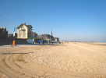
Vendredi matin, sur la plage, une très grande plage, avec des terrains tous marqués "Grands cerfs-volants" ! Bon, on pose a priori qu'on a tous de grands cerfs-volants, au moins esthétiquement, et on s'y met ! Il y a un vent solide, j'ai peur que ça ne reparte comme à Berck ou Châtel, mais c'est quand même supportable. Alors, je lance mon Albatros 2 !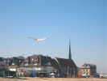
Albatros 2 n'a pas la même forme d'aile que le 1, moins pointue au bout. Et il a un corps en 3D qui m'a donné bien du mal, même si la différence ne se voit pas trop en vol !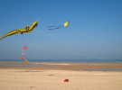
Je monte bien sûr les fanions CVCF, avec une longue bride inférieure pour que les fanions soient sur la partie verticale, et finalement c'est bien lisible, sans ajouter de lest à ce pauvre cerf-volant ! Nos voisins ont un (grand) Gecko et un papillon...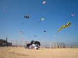
Ils ont aussi un énorme chien-chien qui vole ventre à terre, pas si courant !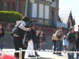
Il y a du monde sur la promenade par cette belle journée, ça intéresse même la télévision...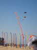
Michel Boucard a planté ses bannières et lancé quelques gros et autres... Ludo a sorti un autre dragon qu'à Berck, en spi et fibre de verre, celui-là, moins fragile. Et, comme tous les dragons, il aime bien le vent !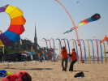
Un grand Trilobyte a pris son vol sans problème... Du vent, alors les L'Higuinen n'ont sorti que leur petit bol. Mais le vent tourne, il faut le déplacer, et même petit, ça tire !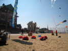
Les coccinelles, elles se porteraient bien si les tentes ne les masquaient pas !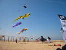
Bon, finalement, avec 2 poissons de plus, la faune de notre terrain se porte assez bien !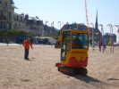
Pour les ancrages, tout est prévu : un bac à disposition avec des piquets de 80 cm en fer à béton, et des plaques de tôle portant une chaîne centrale... Et aussi une pelleteuse pour enfouir les plaques ! Mais elle est très lente, à se déplacer comme à pelleter... Patrick pointe l'emplacement voulu...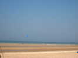
Au bord de mer, les chars à voile tracent. Le club est surtout axé sur le char et le kite-surf, en liaison avec le parapente...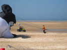
L'organisation dispose aussi d'une petite auto à essence qui peut se déplacer sur le sable, c'est bien pratique pour être partout !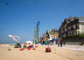
Le camp CVCF est reconstitué, mais à l'économie : on n'est pas nombreux, et les L'Higuinen ont la flemme de monter leur tente !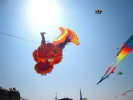
Cette fois, j'ai pu prendre le dragon de Ludo de près, il a vraiment une tête horrible, et des flammes qui s'agitent partout !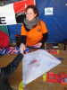
Sur la promenade, un atelier classique où les enfants peuvent construire et décorer de grands Eddies...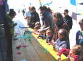
Il y a aussi un atelier didactico-écologique où les enfants construisent des éoliennes avec des bouteilles découpées. L'axe est une dynamo de vélo, et il faut que la lampe s'allume in fine...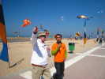
Le directeur de l'atelier commente son entreprise en direct au micro général !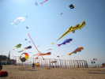
Pour un jour d'attaque, il y a quand même une assez forte densité de cerfs-volants sur les terrains, sans compter les jardins du vent...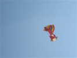
On nous présente un cerf-volant ancien, mais il me semble que la couleur est bien fraîche, même s'il a vieilli dans une malle...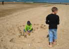
Sur la plage, pas mal de baigneurs pour la saison et les enfants créent des châteaux de sable toujours différents...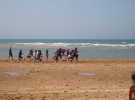
En bordure de mer, un groupe de jeunes ados s'entraîne sous la direction d'un moniteur... Le mouvement semble facile, mais en fait, il faut s'arrêter à chaque foulée, en restant en flexion basse !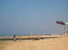
Après le Village de la Glisse des kiters, 2 catamarans feront aussi des sorties d'initiation !...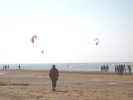
Les Kiters sont aussi de sortie sur l'eau. Mais eux, ils veulent beaucoup de vent, et il sera plutôt trop faible pour la compétition de longue distance qu'ils prévoyaient !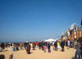
Il fait beau, il y a maintenant un monde fou sur la promenade, et sur la plage ! D'autant qu'un lâcher de bonbons est en train et que les enfants s'y précipitent, mais aussi les parents qui ne peuvent s'empêcher de se mettre au milieu pour favoriser leur progéniture au lieu de la laisser s'amuser...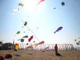
Toujours beaucoup de monde en l'air, même quand l'après-midi s'avance ! Tous veulent profiter du beau temps...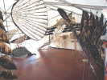
Sous la grande tente, une expo de cerfs-volants que je n'ai jamais vus, et je ne connais pas l'auteur, dommage... Un album de photo doit porter son nom, mais la couverture est scotchée sur la table ! Les teintes de base sont sombres et naturelles, et les structures complexes...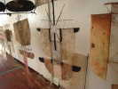
A part les grandes structures, l'auteur présente aussi des tailles plus classiques, comme cette"horloge", toujours dans des tons naturels : goudron, rouille, délavé !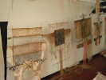
Toujours dans la même veine, ces structures rectangulaires...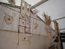
Un dernier "grand", très ventilé et tissé d'un tas de ficelles artistiquement mollies pour l'esthétique !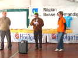
Ce soir, briefing officiel. Monsieur le Maire remercie et promet que ça continuera. Le représentant de la Région (à gauche) fera aussi un speech amusant, ironisant sur la Présidente (Agnès Pincepoche, à droite) et sa ténacité dans ses demandes !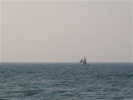
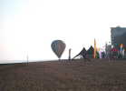
Sur la droite de la plage, une mongolfière fera de la vulgarisation. Elle se gonfle de temps en temps, pour des sauts de puces tenus à bras d'homme, mais jamais pour de vrais vols...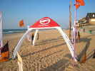
Les Kiters ou leur sponsor ont monté une tente gonflable. Un concept simple et facile à mettre en oeuvre (avec une pompe à voile de kite) et incassable ! Mais la surface abritée par ce modèle est plutôt limitée !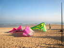
Les kiters eux-mêmes ont d'autres surfaces de toile, autrement plus musclées... Mais faut toujours pomper !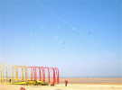
Samedi matin, pas grand vent. Le Gecko survit en rampant, les "Bulles d'Air" de Zézé n'ont pas de problèmes !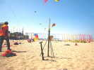
C'est le moment, j'ai sorti ma fusée. Par vent calme, on monte vers 30 m, et on retombe au mètre près dans une cible tracée sur le sable ! J'avais peur d'avoir des problèmes avec le sable, la seule gêne survient au moment d'entrer la fusée, mais c'est simple : si ça force, on la ressort, on essuie le sable et ça remarche... Avec ce ciel lumineux, on avait aussi beaucoup de mal à voir la fusée monter, on ne la repérait que quand elle basculait à l'apogée... Mais un ruban de signalisation traînerait beaucoup, j'ai essayé déjà...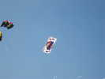
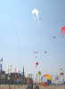
Il y a maintenant du monde : à gauche, les manches éoliennes inversées de Loïc, plus loin, le train d'Abdul qui est venu avec Ludo, des PowerSleds avec des nounours et des grenouilles, en bas le bol de Patrick, au loin, des raies !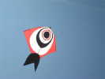
Nouveau, ce joli cerf-volant inspiré du combattant indien, mais beaucoup plus grand, et renforcé !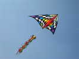
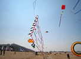
Plus loin, vers les pilotables, un train de Eddies tricolores et patriotiques. Ils volent ici en monofil, mais le bridage 3 points : 2 devant, un derrière, et le triangle inférieur semblent indiquer qu'il est pilotable à ses heures.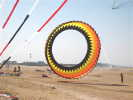
Ce bol au bel arrangement de couleurs est gigantesque et décolle bien...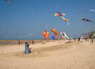
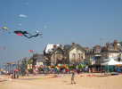
L'ensemble crée une atmosphère de fête, devant laquelle les villas anglo-normandes restent impassibles !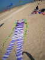
Le vent n'est pas encore régulier, j'ai vu ce cerf-volant en vol, le temps que j'arrive, il était par terre ! Il rappelle un peu l'homme de Georges Peters...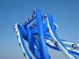
Bien sûr, il y a plusieurs pieuvres comme celle-ci, et un calmar géant. Le club d'Houlgate en a une aussi, rose, reprise des Awitas...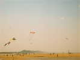
Vers la gauche, encore plus loin, Cabourg et sa plage... Entre deux, les cerfs-volants se diluent petit à petit. On voit encore cette sorte de Pellibox à 3 queues, et ces petites fibules comparables aux énormes de Michel Gressier... sauf la taille et les couleurs !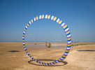
Plus près de nous, Loïc a mis sous un PowerSled 2 bols fins, qui ne tirent pas trop mais refusent de voler dans le même axe ! ...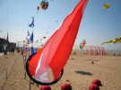
En gros plan, ses "manches", si on peut les appeler ainsi, inversées : l'air n'entre pas dedans, mais circule autour comme sur des pales...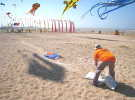
Le vent est monté, et avec les changements droite-gauche, il a fini par traîner ses sacs de sable sur une vingtaine de mètres ! Ca peut bien glisser, des sacs, c'est assez lisse !